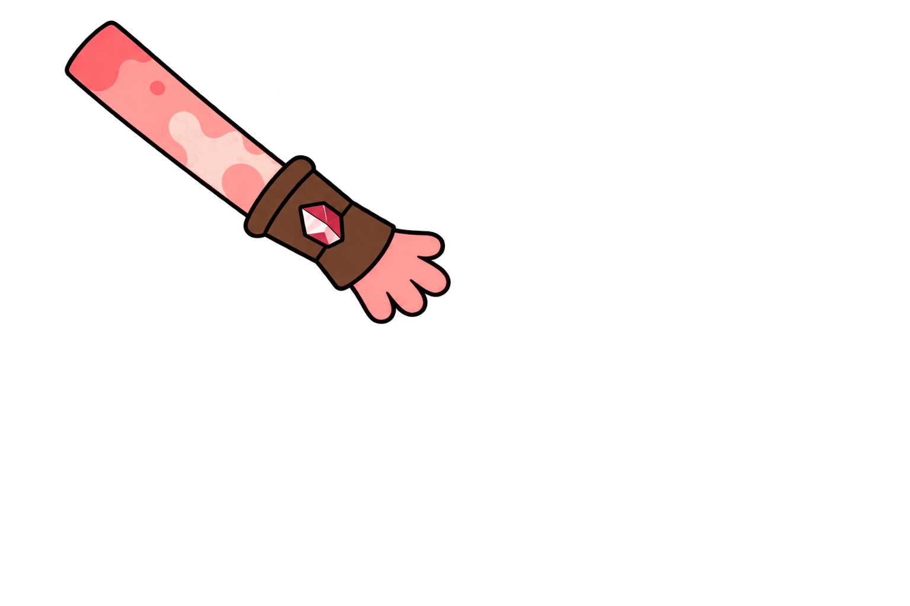
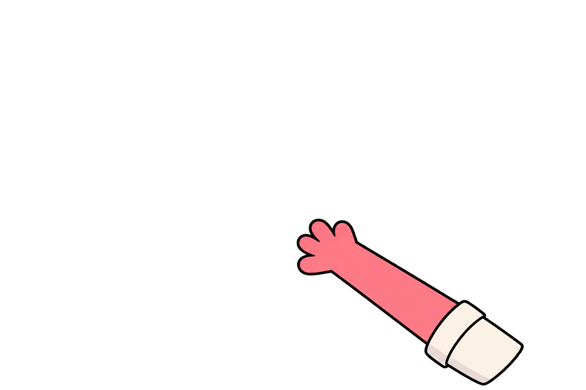
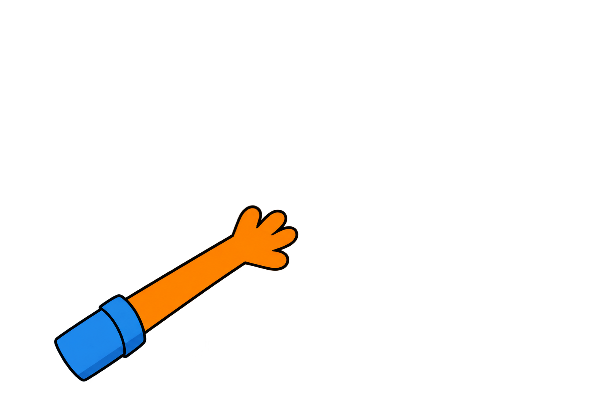

Una aventura cartoon donde cada mundo fantástico es el reflejo de una emoción y cada conflicto se convierte en una oportunidad para crecer.
Érase una vez...
En un cuento muy especial, una página que parecía completamente vacía. Durante unos segundos no había nada en ella, como si la historia aún no hubiese comenzado...
¡Pero de pronto, un resplandor azul parpadeó en el centro! Un mágico portal interdimensional empezó a crecer, haciendo crujir el propio papel del libro como si algo intentase abrirse paso desde el interior.


El hogar en el gran árbol
En lo alto del bosque se alzaba la acogedora casa del gran árbol donde vivían los tres inseparables amigos: un hogar lleno de vida, mapas antiguos y recuerdos de grandes aventuras.


La cocina y las migas de Oti
En la cocina, Oti Reboti, el oso bonachón y gran cocinero, removía tranquilamente una gran sartén de migas aragonesas mientras tarareaba una alegre melodía.
¡Pero para que el festín estuviese completo faltaban unas ricas uvas dulces, así que decidieron subir a buscarlas al desván!

El desván y la discusión
Gato y Crunchy subieron a buscar las uvas al desván, un rincón tranquilo lleno de cajas apiladas y recuerdos olvidados.
Gato apartó con curiosidad las cajas y descubrió un extraño artefacto. Al cogerlo, Crunchy se molestó de inmediato y le reprochó que dejase de tocar cosas que no eran suyas. La discusión empezó al instante: Gato estaba cansado de que Crunchy siempre le dijese lo que tenía que hacer.
Al sentir la energía de su enfado, la misteriosa pistola interdimensional comenzó a sobrecargarse de energía azul, respondiendo al conflicto de ambos...


El salto dimensional
El potente rayo de plasma impactó contra el suelo del desván, abriendo una enorme brecha resplandeciente bajo sus pies.
Antes de que pudieran hacer nada, el portal los absorbió por completo y fueron transportados sin control hacia una dimensión desconocida.

El mundo de roca y lava
Al cruzar el portal y salir al exterior de la cueva, Gato y Crunchy contemplaron asombrados aquel nuevo mundo volcánico. A lo lejos, divisaron a dos habitantes del lugar llamados Riolita y Basalto, quienes se disputaban acaloradamente una gran roca redonda.
De tanto enfadarse y discutir sin escucharse, la roca se les escapó de las manos y cayó rodando montaña abajo hasta encajarse con un tremendo estruendo en la entrada de la cueva.


El peligro inminente
El único camino de regreso al portal interdimensional había quedado completamente bloqueado por el gigantesco peñasco.
Al ver el desastre, Riolita y Basalto se dieron cuenta de las graves consecuencias de su terquedad, mientras que Gato y Crunchy se acercaron para calmar los ánimos.
Los cuatro comprendieron que los reproches no servirían de nada: la única solución para despejar el túnel y salvar la situación era dejar a un lado el orgullo, escucharse y ayudarse como un verdadero equipo.




Cooperación y trabajo en equipo
Al ver el problema, Riolita y Basalto se dieron cuenta de que la roca no era tan importante y decidieron romperla juntos para hacer las paces y ayudar a sus nuevos amigos.
Uniendo sus fuerzas con Gato y Crunchy, los cuatro golpearon con todas sus fuerzas hasta romper la roca en pedazos, dejando el túnel de la cueva libre para volver a casa y resolviendo ambos conflictos gracias a la cooperación.
La cesta de Crunchy y el regalo de fuego
Frente al túnel ya despejado, el portal interdimensional palpitaba con suaves destellos azulados, marcando la hora de regresar.
Como agradecimiento por haber devuelto la armonía al reino, Riolita y Basalto les obsequiaron con el tesoro más codiciado de las cavernas: un racimo de relucientes uvas ígneas recién cosechadas, dulces y cálidas como el caramelo de lava.
Crunchy abrió su fiel cesta de viaje para guardar con cuidado cada uva antes de que perdieran su calor. Tras un entrañable abrazo de despedida, Gato y Crunchy cruzaron el portal rumbo a su cocina.


El regreso y el gran festín
De vuelta en la acogedora cocina del gran árbol, Oti los recibió con la sartén humeante de migas recién hechas.
Añadieron las uvas ígneas al plato, dándole un toque mágico, dulce y crujiente. Sentados alrededor de la mesa, Gato y Crunchy sonrieron sabiendo que, gracias a aprender a escucharse, habían salvado su amistad y conseguido el ingrediente perfecto.
Mirando al lector con complicidad, Gato concluyó feliz: «—Al final no encontramos las uvas en el desván... ¡pero las que trajimos son de otra dimensión!»


¡FIN!
Marc Gil Mayor
Gato y Crunchy — Pitch Bible Interactiva